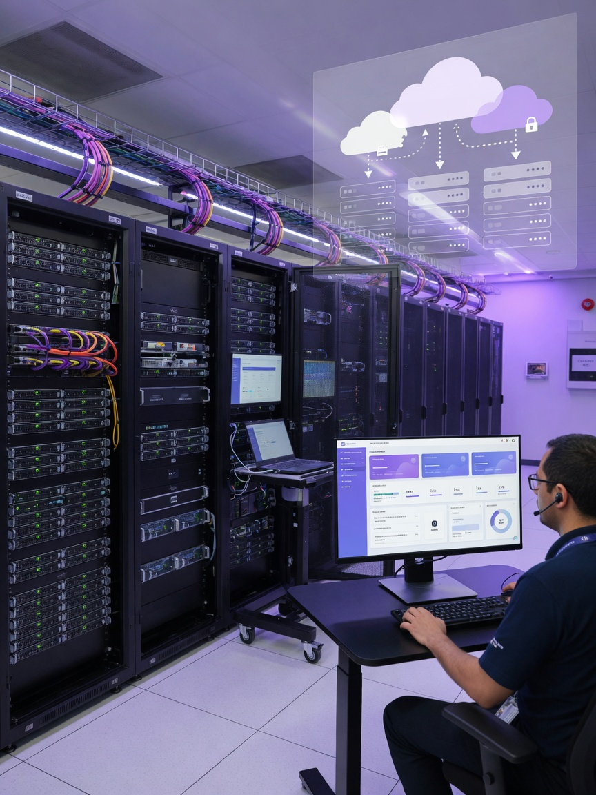

Setup, pengelolaan, dan optimasi server on-premise maupun cloud — untuk data yang aman, akses cepat, backup terjadwal, dan infrastruktur yang scalable.
Data adalah aset berharga bisnis Anda. Kehilangan data akibat hardware failure, ransomware, atau human error dapat merugikan perusahaan secara signifikan.
Creative Network membantu membangun fondasi infrastruktur server yang handal — baik server fisik di kantor (on-premise) maupun solusi cloud untuk fleksibilitas, efisiensi biaya, dan akses dari mana saja.
Butuh file server, email server, dan backup terpusat untuk 20–100 user.
Server aplikasi ERP, database produksi, dan sistem internal.
Cloud-native apps, VPS, dan infrastruktur yang cepat scale-up.
Setup hardware server, RAID, OS installation, dan hardening dasar.
Centralized user management, group policy, dan single sign-on.
Shared folder terpusat, permission management, dan print server.
Setup mail server on-premise atau migrasi ke Google Workspace / M365.
Jadwal backup harian/mingguan, incremental, dan offsite copy.
Rencana pemulihan bencana, RTO/RPO planning, dan restore testing.
Provisioning VPS, security group, SSL, dan deployment aplikasi.
Alert CPU, disk, memory, service down — notifikasi ke admin.
Setup server tunggal untuk file sharing & backup dasar.
Infrastruktur server lengkap dengan AD, virtualisasi, dan DR.
Migrasi cloud penuh, hybrid cloud, dan managed services.
Jelajahi 9 platform server, cloud, dan backup — klik untuk melihat kegunaan & fungsinya.

Setup server dan infrastruktur IT balai desa untuk sistem informasi desa (SID). Termasuk penyimpanan data administrasi, backup harian, dan jaringan internal yang tertata rapi.
Evaluasi infrastruktur existing, kebutuhan kapasitas, dan tujuan bisnis.
Arsitektur server/cloud, spesifikasi hardware, dan timeline.
Setup server, migrasi data, konfigurasi backup, dan testing.
Monitoring berkelanjutan, patch management, dan dukungan teknis.
Konsultasikan kebutuhan infrastruktur data Anda dengan tim ahli Creative Network.